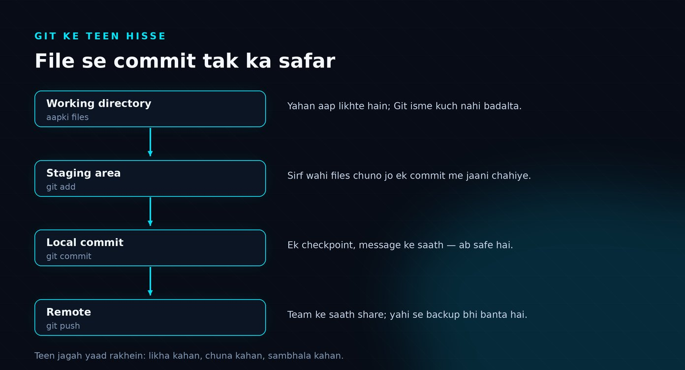
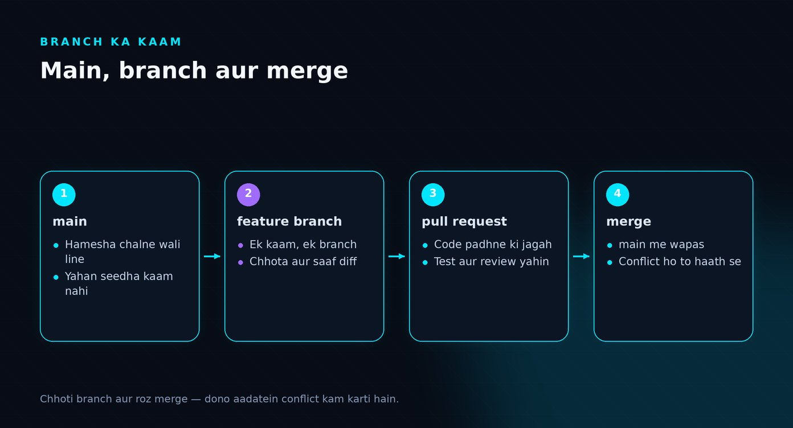

Git aur GitHub Kya Hai? Version Control ki Aasan Guide
हर developer के साथ एक बार यह होता है: code में कुछ बदला, काम नहीं किया, और अब पता नहीं कि पिछले हफ़्ते वाला ठीक version कहाँ गया। Git इसी डर का इलाज है। वह आपके code की हर अवस्था को याद रखता है, ताकि आप कभी भी पीछे लौट सकें और यह भी देख सकें कि किसने, कब और क्यों क्या बदला।
इस guide में मैं Git और GitHub का फर्क, Git के तीन हिस्से, 10 commands जो रोज़ के 90% काम कर देते हैं, branch और merge, पहले repository का पूरा setup, commit message लिखने का तरीका, conflict सुलझाना, और वे छह गलतियाँ जो शुरुआत में सबसे महंगी पड़ती हैं — सब आसान भाषा में।
छोटा जवाब: Git एक version control tool है जो आपके computer पर चलता है और code के हर बदलाव का record रखता है। GitHub एक website है जहाँ वही record internet पर रखा जाता है, ताकि team साथ काम कर सके और backup बना रहे। Git के बिना GitHub का कोई मतलब नहीं; GitHub के बिना Git पूरी तरह काम करता है — बस team के साथ साझा करना मुश्किल हो जाता है।
Git aur GitHub: फर्क साफ़ करें
Git को समझने का सबसे आसान तरीका है — इसे document के "undo history" की तरह देखना, पर बहुत ज़्यादा ताकतवर। आप एक folder चुनते हैं, Git को बताते हैं कि इस पर नज़र रखो, और फिर जब भी कुछ ठीक लगे, एक snapshot बना देते हैं। उस snapshot को commit कहते हैं।
GitHub उसी folder की एक copy internet पर रखता है। इससे तीन फायदे होते हैं: laptop खराब होने पर code बचा रहता है, दो लोग एक साथ काम कर सकते हैं, और हर बदलाव पर चर्चा हो सकती है। GitHub के अलावा GitLab और Bitbucket भी यही काम करते हैं — यानी GitHub कोई ज़रूरी हिस्सा नहीं, एक लोकप्रिय जगह है।
| पहलू | Git | GitHub |
|---|---|---|
| क्या है | Tool (software) | Website / service |
| कहाँ चलता है | आपका computer | Internet पर |
| काम | History, branch, merge | Hosting, review, issues, CI |
| बिना internet | पूरा चलता है | नहीं चलेगा |
| बनाने वाला | Linus Torvalds, 2005 | GitHub (Microsoft) |
Git ke तीन हिस्से

Working directory: आपका folder जैसा अभी है। यहाँ आप code लिखते हैं, files बनाते और मिटाते हैं। Git इसमें कुछ नहीं बदलता, बस देखता रहता है कि क्या बदला।
Staging area: वह जगह जहाँ आप तय करते हैं कि अगले commit में क्या-क्या जाएगा। git add से files यहाँ आती हैं। इसका फायदा यह है कि 10 files बदलने के बाद भी आप सिर्फ़ 3 को एक साफ़ commit में डाल सकते हैं।
Repository (local): जब आप git commit करते हैं, staging का सामान एक snapshot बनकर repository में चला जाता है। अब वह बदलाव सुरक्षित है — आप आगे कुछ भी करें, वापस आ सकते हैं।
Remote: GitHub पर रखी copy. git push से local commits वहाँ जाते हैं, और git pull से वहाँ के बदलाव यहाँ आते हैं।
10 commands जो रोज़ के 90% काम कर देते हैं
git init # naya repo shuru karo
git clone <url> # doosre ka repo copy karo
git status # kya badla, kya staged hai
git add <file> # file ko commit ke liye chuno
git commit -m "message" # snapshot banao
git log --oneline # history dekho
git pull # remote ke badlav lo
git push # apne commit bhejo
git switch -c feature-x # nayi branch banao
git switch main # wapas main par aaoइन दस से शुरुआत करें। जब ज़रूरत पड़े, तब git diff (क्या बदला), git restore (बदलाव वापस), git merge और git rebase सीखें। एक बात याद रखें — जो command समझ न आए, उसे किसी असली project पर न चलाएँ; पहले एक test folder में आज़माएँ।
Branch aur merge

Branch एक अलग रास्ता है जहाँ आप बिना main को छुए काम कर सकते हैं। मान लीजिए आपको login page में बदलाव करना है। आप git switch -c login-fix से नई branch बनाते हैं, काम करते हैं, commits करते हैं। अगर कुछ गड़बड़ हो, तो बस main पर वापस आ जाएँ — वहाँ कुछ नहीं बदला।
जब काम ठीक लगे, तो branch को main में मिलाते हैं। Team में यह काम pull request से होता है: आप अपनी branch push करते हैं, GitHub पर एक PR खोलते हैं, साथी code पढ़ते हैं, comment करते हैं, और फिर merge करते हैं। इससे दो फायदे होते हैं — code दो लोगों ने देखा, और चर्चा का record बना रहता है।
Branch छोटी रखें। एक हफ़्ते चलने वाली branch में 40 files बदल जाती हैं और review मुश्किल हो जाता है। दो-तीन दिन का काम, फिर merge — यही आदत conflict सबसे ज़्यादा कम करती है।
पहला repository: step-by-step
- Git install करें और terminal में
git --versionसे जाँचें। - नाम और email सेट करें (एक बार):
git config --global user.name "Aapka Naam"औरgit config --global user.email "aap@example.com". - Folder बनाएँ और शुरू करें:
mkdir my-project && cd my-project && git init. - .gitignore बनाएँ: इसमें वे चीज़ें लिखें जो repo में नहीं जानी चाहिए —
node_modules/,.env, build folders. - पहला commit:
git add .फिरgit commit -m "Initial project setup". - GitHub पर खाली repo बनाएँ — README या .gitignore जोड़े बिना, ताकि पहला push आसान रहे।
- Remote जोड़ें:
git remote add origin <repo-url>. - Push करें:
git push -u origin main. अब आपका code GitHub पर है।
अगर पहला push पर error आए कि "remote contains work that you do not have", तो इसका मतलब है कि GitHub पर पहले से कोई commit है (जैसे README). तब git pull --rebase origin main चलाकर फिर push करें।
Commit message कैसे लिखें
Commit message भविष्य में आपको ही पढ़ना है। "update", "fix", "changes" — ये तीन शब्द किसी काम के नहीं, क्योंकि छह महीने बाद आपको पता नहीं चलेगा कि क्या बदला था। एक अच्छा message बताता है कि क्या बदला और क्यों।
मेरा तरीका सीधा है: पहली line में एक छोटा वाक्य जो "इस commit के बाद क्या अलग है" बताए, और उसके बाद एक खाली line छोड़कर दो-तीन lines में कारण। जैसे:
Validate email before saving the signup form
The form accepted addresses without a dot in the domain, which created
rows that the mail service rejected later. Validation now runs on the
server too, not only in the browser.यह format आपको बाद में git log पढ़ने लायक बनाता है, और किसी bug के समय "यह line क्यों लिखी गई थी" का जवाब देता है।
Conflict कैसे सुलझाएँ
Conflict तब होता है जब दो लोग एक ही file की एक ही line बदल दें। Git खुद तय नहीं कर सकता कि किसकी बात सही है, इसलिए वह दोनों को file में रख देता है और आपसे पूछता है।
पहला कदम — घबराएँ नहीं। git status बताएगा कि कौन सी files conflict में हैं। उन्हें खोलें, और वे markers ढूँढें जो <<<<<<<, ======= और >>>>>>> जैसे दिखते हैं। बीच का हिस्सा दोनों तरफ़ का बदलाव है। आपको तय करना है कि अंतिम file में क्या रहेगा — कभी आपका, कभी सामने वाले का, कभी दोनों का मिला हुआ।
Markers हटाकर file को वैसा बनाएँ जैसा आप चाहते हैं, फिर git add और git commit. अगर उलझन बढ़े, तो git merge --abort से सब वापस लौट सकते हैं।
अगर conflict बार-बार आता है, तो वजह अक्सर प्रक्रिया होती है — लंबी branch, देर से pull, या एक ही file पर दो लोगों का काम। इलाज वही है: छोटी branch, रोज़ pull, और बहुत बड़ी file को छोटे हिस्सों में तोड़ना। Conflict का डर न रखें — यह Git का सामान्य हिस्सा है, गलती नहीं।
GitHub पर और क्या मिलता है
Pull requests: code review की जगह। यहाँ line-by-line comment होते हैं, और merge से पहले checks चल सकते हैं।
Issues: काम और bug का record. अच्छा issue बताता है कि क्या हुआ, कैसे दोबारा बनाया जाए, और क्या उम्मीद थी।
Actions: हर push पर अपने आप test या deploy चलाना। छोटी team के लिए यह सबसे बड़ा फायदा है — हर बदलाव जाँचा हुआ जाता है।
Releases और tags: तय versions पर निशान लगाना, ताकि आप कह सकें "v1.2 पर यह code था"।
छह गलतियाँ जो महंगी पड़ती हैं
1. Secret commit करना। API key, password या .env file एक बार commit हो गई तो वह history में हमेशा रहेगी। सबसे पहले key बदलें, फिर history से हटाने का काम करें।
2. बहुत बड़ा commit। 50 files का एक commit review में नहीं पढ़ा जाता। छोटे commits बनाएँ, हर एक का अपना मतलब रखें।
3. main पर सीधा काम। बिना branch काम करने से main कभी-कभी टूट जाता है। हर काम के लिए branch, चाहे कितना छोटा हो।
4. force push से दूसरों का काम मिटाना। --force तब इस्तेमाल करें जब आप पूरी तरह जानते हों कि क्या मिट रहा है। shared branch पर यह कभी न करें।
5. .gitignore न बनाना। node_modules और build folders repo को भारी कर देते हैं। शुरुआत में ही यह file बना लें।
6. Pull न करना। हफ़्ते भर बाद pull करने पर सैकड़ों conflict मिलते हैं। रोज़ सुबह pull करने की आदत सबसे सस्ता बीमा है।
एक और बात — इन गलतियों का इलाज अनुशासन नहीं, सेटअप है। .gitignore template से आता है, pre-commit hook secret पकड़ सकता है, और branch protection main पर सीधा push रोक देता है। जो नियम machine निभा सके, उसे इंसान की याद पर न छोड़ें।
यही आदतें बड़े project में भी काम आती हैं — जब टीम बढ़ती है, तो branch discipline और review ही quality बचाते हैं। CI/CD वाला हिस्सा system design और unit testing वाली guides से जुड़ता है।
Mera anubhav
मैंने शुरुआत में Git को backup की तरह इस्तेमाल किया — महीने में एक बार push, बस। जब एक बार laptop ठीक हुआ और मैंने पुराना version देखना चाहा, तो पता चला कि बीच के तीन हफ़्ते का कोई record ही नहीं था। उसके बाद मैंने छोटे commits की आदत डाली, और फिर कभी "कौन सा version चल रहा था" का जवाब ढूँढना नहीं पड़ा।
दूसरी बात जो मैंने सीखी: commit message अच्छा लिखने से debugging आधी हो जाती है। जब कोई bug आता है, तो मैं पहले git log में उस file के commits पढ़ता हूँ। आधी बार वजह वहीं लिखी मिल जाती है।
तीसरी बात: Git सीखने का सबसे अच्छा तरीका एक नकली repo है। उसमें जाकर branch बनाएँ, conflict पैदा करें, rebase करें, और बिगाड़ें — कुछ नहीं जाएगा। असली project पर पहली बार सीखने से डर लगता है, और डर से लोग गलत command चला देते हैं।
नतीजा
Git आपके काम की याद रखता है, GitHub उसे team के साथ साझा करता है। तीन जगहें याद रखें — लिखा कहाँ, चुना कहाँ, सँभाला कहाँ। रोज़ के लिए दस commands काफ़ी हैं, बाकी ज़रूरत पर आएँगी। छोटी branch, छोटा commit, साफ़ message और रोज़ pull — यह चार आदतें शुरुआत में ही डाल दें, तो Git कभी डरावना नहीं लगेगा।
अक्सर पूछे जाने वाले सवाल
क्या GitHub के बिना Git चल सकता है?
हाँ, पूरी तरह। Git local tool है। GitHub सिर्फ़ hosting और collaboration के लिए है; आप Git को अपने computer पर ही इस्तेमाल कर सकते हैं।
क्या GitHub free है?
Public repos और सामान्य private repos के लिए free plan है। Team features, बड़े storage और advanced security के लिए paid plans हैं — अपनी ज़रूरत के हिसाब से official pricing देखें।
git pull और git fetch में फर्क?
fetch सिर्फ़ remote के बदलाव लाता है, आपकी files नहीं बदलता। pull वही करता है और फिर merge भी कर देता है — यानी सीधे आपके code में बदलाव आ जाता है।
गलत commit हो गया, क्या करें?
अगर push नहीं हुआ, तो git commit --amend से message या आख़िरी बदलाव ठीक कर सकते हैं। Push हो गया और shared branch है, तो नया commit बनाकर सुधारें — history बदलने से दूसरों को परेशानी होती है।
क्या non-developer Git सीख सकता है?
हाँ। जो लोग document या design files का version रखना चाहते हैं, उनके लिए भी Git काम आता है — बस commands वही रहेंगी, files अलग होंगी।